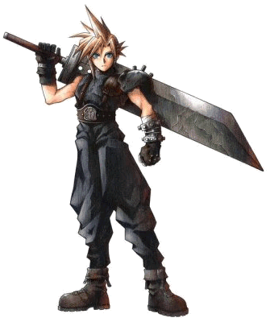

Forums galactiques > Taverne galactique : lieu de discussion informel > débutant
Pages : 1
| elliott Réputation à la taverne : 0  12/11 ETU 13:02 | Score : 0 Détails je me suis fait attaquer par Seigneur de Dalarran et je n ai plus de planète . Je suis avant dernier
merci de m aider | ||
| faust VIII Réputation à la taverne : 218  12/11 ETU 13:04 | Score : 0 Détails je te donne deux planètes et si tu as besoin de ressources on verra ça par mp
| ||
| elliott Réputation à la taverne : 0 12/11 ETU 13:05 | Score : 0 Détails merci
| ||
| DarkDevil Réputation à la taverne : 569  12/11 ETU 14:08 | Score : 0 Détails Envoie moi le numéro de ton système natal et je viendrai le reprendre.
| ||
| Chris Réputation à la taverne : 68  12/11 ETU 14:14 | Score : 0 Détails Darkdevil, je me permet de joindre mes forces aux votres !!!
| ||
| Strüdel Réputation à la taverne : 222  12/11 ETU 14:24 | Score : 1 Détails Vous voulez pâs essayer d'être l'âmi de tout le monde âvant d'âller leur faire du mâl?
[Traduction en cours] Chers commandants. Permettez-moi de vous rappeler quelques règles de bienséance facilement applicables dans ce type de situation. Elliott. Avez-vous contacté votre agresseur avant de venir vous plaindre ici? Je ne vous reproche pas de chercher à obtenir de l'aide, mais il serait bon de chercher à résoudre votre problème par la voie diplomatique avant de faire intervenir des forces extérieures. Ce Seigneur de Dalarran est-il un de vos voisins de natal, ou est-il arrivé dans votre système suite au développement de l'hyperfusion? Darkdevil et Chris. Votre volonté de défendre un jeune commandant est toute à votre honneur, mais ne pensez-vous pas qu'une recherche sur les tenants et aboutissants de cette affaire serait plus appropriée pour le moment? Je pense que le Seigneur de Dalarran sera attentif à des recommandations venant de commandants plus puissants. Demandez-lui de rendre la planète conquise avant de vous précipiter les armes à la main. Merci de votre attention. Je serais heureux de contacter le Seigneur de Dalarran si vous le pensez utile, Elliott. |
Pages : 1
Forums galactiques > Taverne galactique : lieu de discussion informel > débutant